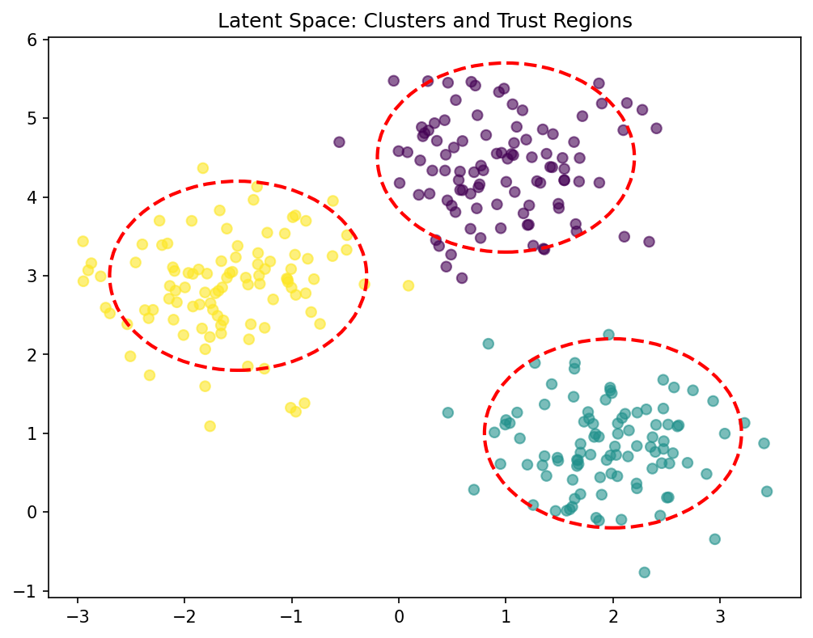
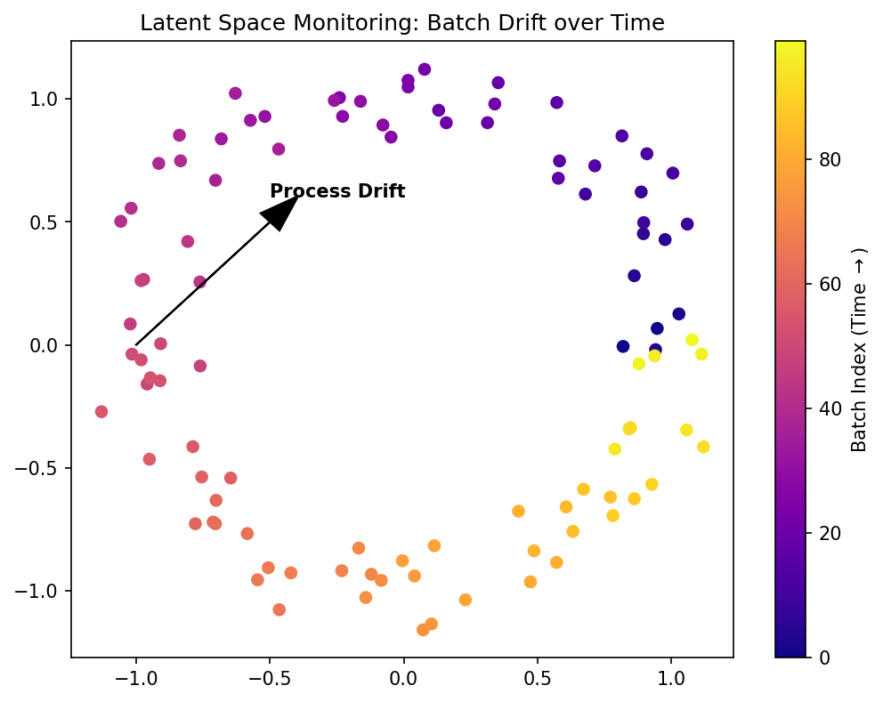

graph LR
A[Input Data x] --> B[Encoder f_phi]
B --> C((Latent Space z))
C --> D[Decoder g_psi]
D --> E[Reconstruction x']
style C fill:#f9f,stroke:#333,stroke-width:4pxMathematical Foundations of AI & ML
Unit 10: Latent Spaces and Embeddings
Prof. Dr. Philipp Pelz
FAU Erlangen-Nürnberg


01. Title + Unit 10 positioning
- Unit 9 introduced autoencoders as representation learners.
- Unit 10 dives deeper: what is the structure of the latent space, and how do we visualize and exploit it?
- We also introduce t-SNE, UMAP, and kernel PCA for nonlinear dimensionality reduction.
02. Learning outcomes for Unit 10
By the end of this lecture, students can:
- define latent spaces formally and distinguish them from raw feature spaces,
- derive the t-SNE objective and explain the crowding problem,
- compare t-SNE, UMAP, and kernel PCA for visualization and dimensionality reduction,
- use latent-space distributions for anomaly detection and trust assessment.
03. What is a latent space?
- A latent space is a low-dimensional space that captures the essential variation of high-dimensional data.
- “Latent” = hidden — these variables are not directly observed but inferred from the data.
- Every dimensionality reduction method (PCA, autoencoders, t-SNE) defines a latent space.
04. Latent space vs feature space vs PCA eigenspace
| Space | Definition | Structure |
|---|---|---|
| Feature space | Raw measurements ((^d)) | High-dimensional, redundant |
| PCA eigenspace | Linear projection onto top eigenvectors | Flat subspace, orthogonal axes |
| Latent space | Learned embedding (possibly nonlinear) | Captures manifold structure |
05. Why latent spaces matter
- Compression: store data efficiently as latent codes.
- Visualization: project to 2D/3D for exploration.
- Generation: sample from latent space to create new data.
- Anomaly detection: identify out-of-distribution points.
- Downstream prediction: use latent features as inputs to supervised models.
06. Recap: autoencoder as latent space constructor
- Encoder (f_: ^{d_{}} ^{d_{}}) maps each input to a latent code.
- The collection ({i = f(_i)}) forms a point cloud in the latent space.
- The decoder (g_) ensures the latent code retains enough information for reconstruction.
07. Embeddings: points in latent space
- An embedding assigns each data point a coordinate in the latent space.
- Good embeddings preserve meaningful relationships:
- Similar inputs () nearby embeddings.
- Different inputs () distant embeddings.
- The quality of the embedding determines the utility of the latent space.
08. What makes a good latent space?
- Neighborhood preservation: similar data points remain neighbors.
- Smoothness: small changes in latent coordinates produce small changes in decoded output.
- Continuity: no “holes” — every point in the latent space decodes to something meaningful.
- Disentanglement (ideal): each latent dimension corresponds to one interpretable factor of variation.
09. Latent space geometry: clusters and manifolds
- Clusters: discrete categories form separated groups in latent space.
- Manifolds: continuous variation creates smooth surfaces or curves.
- Mixed: clusters connected by low-density paths — partially continuous, partially discrete.
- The geometry reflects the structure of the data (Neuer et al. 2024).
10. Roadmap of today’s 90 min
- 10–25 min: Autoencoder latent space structure and interpretation.
- 25–40 min: Latent space geometry, interpolation, arithmetic.
- 40–55 min: t-SNE — derivation and application.
- 55–65 min: UMAP and kernel PCA.
- 65–80 min: Anomaly detection and trust quantification in latent space.
11. Autoencoder latent neurons: what do they encode?
- Each latent dimension captures a learned factor of variation.
- Example (spectral data): one latent neuron encodes peak position, another encodes peak width.
- These factors are discovered automatically — no human labeling required.
- But: factors may be entangled (mixed together) in standard autoencoders (Neuer et al. 2024).
12. Visualizing 2D latent spaces
- When \(d_{\mathbf{z}} = 2\), the latent space can be plotted directly.
- Color points by class label or continuous property to reveal structure.
- Well-separated colored clusters indicate the AE has learned discriminative features.
- Overlapping colors indicate ambiguity or insufficient bottleneck capacity.
13. Interpreting latent space clusters
- Tight, separated clusters: distinct data modes that the AE can distinguish.
- Overlapping clusters: similar classes or insufficient latent capacity.
- Elongated clusters: continuous variation within a class (e.g., material composition gradient).
- Cluster structure informs downstream tasks: classification boundaries follow cluster separations.
14. Latent space interpolation
- Linearly interpolate between two latent codes:
\[ \mathbf{z}_{\text{mix}} = \alpha \mathbf{z}_1 + (1-\alpha) \mathbf{z}_2, \quad \alpha \in [0, 1] \]
- Decode \(\mathbf{z}_{\text{mix}}\) to observe smooth transitions between inputs.
- Smooth interpolation = the latent space has learned a meaningful, continuous representation.
15. Latent space arithmetic
- Compute “concept vectors” by averaging latent codes of a category.
- Perform arithmetic: \(\mathbf{z}_{\text{result}} = \mathbf{z}_A + (\bar{\mathbf{z}}_B - \bar{\mathbf{z}}_C)\).
- Famous example (word embeddings): king − man + woman ≈ queen.
- This works when the latent space disentangles the relevant factors.
16. The issue of latent space structure
- Standard autoencoders produce unstructured latent spaces.
- There may be “holes” — regions where no training data maps — and decoding produces nonsense.
- The latent space is not designed for sampling or generation.
- This motivates variational autoencoders (VAEs), covered in a later unit.
17. Preview: variational autoencoders (VAEs)
- VAEs impose a prior (typically Gaussian) on the latent space.
- The encoder outputs a distribution \(q(\mathbf{z}|\mathbf{x})\), not a point.
- The loss includes a KL-divergence term that regularizes the latent space.
- Result: a continuous, smooth latent space suitable for generation.
18. Checkpoint: latent space quality
- Question: Your 2D latent space has a large empty region between two clusters. What does this mean?
- Answer: The AE has not seen data in that region — decoding points from the gap may produce artifacts. This indicates a discontinuous latent space (typical for standard AEs, addressed by VAEs).
19. t-SNE: purpose and overview
- t-Distributed Stochastic Neighbor Embedding (van der Maaten & Hinton, 2008).
- Purpose: visualization of high-dimensional data in 2D or 3D.
- Key idea: preserve local neighborhood structure while allowing global distortion.
- Not for feature extraction or downstream ML — purely for visualization (McClarren 2021).
20. Step 1: Gaussian similarities in high dimensions
- For each pair ((i, j)), define the conditional probability that (j) is a neighbor of (i):
\[ p_{j|i} = \frac{\exp(-\|\mathbf{x}_i - \mathbf{x}_j\|^2 / 2\sigma_i^2)}{\sum_{k \neq i}\exp(-\|\mathbf{x}_i - \mathbf{x}_k\|^2 / 2\sigma_i^2)} \]
- (_i) is chosen per point to achieve a target perplexity.
21. Perplexity parameter
- Perplexity () effective number of neighbors considered for each point. ::: {.fragment}
- Low perplexity (5): very local structure; many small clusters. ::: ::: {.fragment}
- High perplexity (50): broader neighborhoods; fewer, larger clusters. ::: ::: {.fragment}
- Typical range: 5–50. The bandwidth (_i) is set via binary search for each point. :::
22. Step 2: Student-t similarities in low dimensions
- In the 2D embedding, define similarities using a Student-t distribution with one degree of freedom:
\[ q_{ij} = \frac{(1 + \|\mathbf{y}_i - \mathbf{y}_j\|^2)^{-1}}{\sum_{k \neq l}(1 + \|\mathbf{y}_k - \mathbf{y}_l\|^2)^{-1}} \]
- The heavy tails of the Student-t allow distant points to spread out in the embedding.
23. The crowding problem
- Mapping from high to low dimensions creates a crowding problem: ::: {.fragment}
- In high dimensions, many points can be moderately distant. ::: ::: {.fragment}
- In 2D, they crowd into a small area. ::: ::: {.fragment}
- Using Gaussian in both spaces → moderate-distance points collapse together. ::: ::: {.fragment}
- The Student-t distribution’s heavier tails solve this by allowing more spread. :::
24. Step 3: KL divergence minimization
- Minimize the KL divergence between high-dim (()) and low-dim (()) similarities:
\[ \text{KL}(\mathbf{P} \| \mathbf{Q}) = \sum_{i \neq j} p_{ij} \log \frac{p_{ij}}{q_{ij}} \]
- Optimize the embedding coordinates ({_i}) via gradient descent.
- Asymmetric KL: heavily penalizes nearby points being mapped far apart.
25. t-SNE: what it preserves
- Preserves: local neighborhood structure (nearby points stay nearby).
- Does NOT preserve: global distances, cluster sizes, cluster positions.
- t-SNE is a nonparametric method — it computes embeddings for fixed data, not a mapping function.
- New data points cannot be projected without rerunning the entire algorithm.
26. t-SNE: common misinterpretations
- Cluster size is meaningless: tight clusters are not “tighter” in the original space.
- Inter-cluster distance is meaningless: far-apart clusters are not necessarily far apart originally.
- Topology can change with hyperparameters: different perplexity values produce different layouts.
- Only within-cluster neighborhood relationships are reliable.
27. t-SNE hyperparameters
- Perplexity (5–50): controls locality. Try multiple values and look for stable patterns.
- Learning rate (200 default in sklearn): too low → compression; too high → chaotic layout.
- Iterations (≥ 1000): t-SNE needs many iterations to converge.
- Random seed: stochastic — results vary between runs. Report multiple runs.
28. t-SNE on Fashion MNIST: archipelago interpretation
- 10 clothing categories projected to 2D.
- Similar categories (shirt, pullover, coat) overlap — the algorithm captures semantic similarity.
- Dissimilar categories (trouser, sandal) form isolated islands.
- The “archipelago” pattern = successful class separation (McClarren 2021).
29. t-SNE: strengths and weaknesses
| Strengths | Weaknesses |
|---|---|
| Excellent local structure | No global distance preservation |
| Handles complex manifolds | (O(N^2)) complexity (slow) |
| Reveals clusters and subgroups | Non-parametric (no new-point mapping) |
| Widely used and understood | Hyperparameter-sensitive |
30. Checkpoint: t-SNE interpretation
- Question: Two clusters appear far apart in a t-SNE plot. Does this mean they are far apart in the original space?
- Answer: No. Inter-cluster distances in t-SNE are not meaningful. Only local neighborhoods are preserved.
31. UMAP: Uniform Manifold Approximation and Projection
- Based on topological data analysis and manifold theory (McInnes et al., 2018).
- Key advantages over t-SNE:
- Faster (approximate nearest neighbors, (O(N N))).
- Better preserves global structure.
- Supports transform of new data points.
32. UMAP vs t-SNE
| Aspect | t-SNE | UMAP |
|---|---|---|
| Speed | Slow ((O(N^2))) | Fast ((O(N N))) |
| Global structure | Poor | Better preserved |
| New points | Must rerun | Transform method available |
| Theory | KL divergence | Topological / cross-entropy |
| Typical use | Small–medium datasets | Any size |
33. UMAP hyperparameters
- n_neighbors: controls local vs global balance (similar to perplexity in t-SNE).
- min_dist: how tightly points cluster (small → tight clusters, large → spread out).
- n_components: embedding dimension (typically 2 for visualization).
- UMAP results are generally more stable across runs than t-SNE.
34. Kernel PCA: the kernel trick for nonlinear structure
- Replace dot products in PCA with kernel evaluations:
\[ k(\mathbf{x}_i, \mathbf{x}_j) = \phi(\mathbf{x}_i)^\top \phi(\mathbf{x}_j) \]
- The kernel implicitly maps data to a high-dimensional feature space (()).
- PCA in this space captures nonlinear structure in the original space (Bishop 2006).
35. Common kernels
- RBF (Gaussian): (k(_i, _j) = (-|_i - _j|^2)) — captures smooth nonlinearity.
- Polynomial: (k(_i, _j) = (_i^_j + c)^d) — captures polynomial interactions.
- Sigmoid: (k(_i, _j) = (_i^_j + c)) — neural network connection.
- The kernel choice encodes assumptions about the data structure.
36. Kernel PCA: strengths and limitations
- Strengths: principled (eigenvalue decomposition), captures nonlinear structure, theoretical guarantees.
- Limitations: (O(N^2)) memory for kernel matrix, no density estimation, kernel selection requires care.
- Best suited for moderate-sized datasets where a kernel can be specified.
37. Comparison: PCA, kernel PCA, t-SNE, UMAP
| Method | Linear? | Preserves | Scalability | New points |
|---|---|---|---|---|
| PCA | Yes | Global variance | (O(d^2 N)) | Yes |
| Kernel PCA | No | Kernel similarity | (O(N^3)) | Limited |
| t-SNE | No | Local neighborhoods | (O(N^2)) | No |
| UMAP | No | Local + some global | (O(N N)) | Yes |
Key Takeaway
- Linear: Best for interpretability and speed.
- Nonlinear: Best for complex manifolds.
- UMAP: Often preferred for large datasets.
38. When to use which
- Quick exploration: PCA (fast, interpretable).
- Visualization of clusters: t-SNE or UMAP (nonlinear, reveals structure).
- Feature extraction for ML: PCA or autoencoder (produces reusable features).
- Nonlinear feature extraction: kernel PCA (moderate (N)) or autoencoder (large (N)).
39. Anomaly detection in latent space
- Train autoencoder on normal data.
- Normal data forms clusters in latent space; anomalies map to low-density regions.
- Two complementary strategies: reconstruction error and latent density (Neuer et al. 2024).
40. Strategy 1: reconstruction error revisited
- High reconstruction error (| - g(f())|) indicates the input differs from learned patterns.
- Set threshold from validation normal distribution.
- Limitation: some anomalies may reconstruct well if they share local structure with normals.
41. Strategy 2: latent density estimation
- Fit a density model to normal latent embeddings:
- Gaussian: (p() = (; , )).
- GMM: (p() = _k _k (; _k, _k)).
- Anomaly score: (-p()). High score = low density = potential anomaly.
42. Combining both strategies
- Flag a sample as anomalous if:
- Reconstruction error exceeds threshold, OR
- Latent density is below threshold.
- This reduces false negatives: catches anomalies that one strategy alone might miss.
- The two scores can also be combined into a single anomaly score.
43. Conditional latent probabilities and trust
- For classification, compute (p( | )) using a classifier trained in latent space.
- Low maximum probability (_c p(c | )) indicates uncertain classification.
- Use this as a trust score: predictions with low trust are flagged for human review (Neuer et al. 2024).
44. Trust quantification in deployment
- In safety-critical applications (materials, medical), blind model predictions are unacceptable.
- The latent-space trust score provides an automated quality gate:
- High trust: deploy prediction.
- Low trust: defer to human expert.
- This creates a human-in-the-loop system with quantified confidence.
45. Materials example: spectral classification with trust scoring
- Classify material type from NIR spectrum using autoencoder + classifier.
- High-confidence predictions (trust > 0.95) are automatically accepted.
- Low-confidence predictions (trust < 0.8) are flagged for expert review.
- Result: 95% of samples classified automatically; 5% reviewed manually.

46. Materials example: process monitoring via latent drift
- Track latent embeddings (_t) over time during a manufacturing process.
- Drift from the normal cluster indicates process degradation.
- Advantage over raw sensor monitoring: latent space distills many sensors into a compact signal.
- Early drift detection enables preventive maintenance.

47. Lecture-essential vs exercise content split
- Lecture: latent space formalism, t-SNE/UMAP theory, kernel PCA, anomaly detection, trust quantification.
- Exercise: AE latent visualization, t-SNE and UMAP on Fashion MNIST, anomaly injection, comparison experiments.
48. Exercise setup summary
- Build AE on synthetic Gaussian pulse data; visualize 2D latent space.
- Apply t-SNE (sklearn) to Fashion MNIST subset; interpret the archipelago.
- Compare t-SNE vs UMAP: local vs global structure preservation.
- Inject anomalous signals; detect via reconstruction error and latent density.
49. Mini concept quiz
- Which distribution is used in the low-dimensional space of t-SNE to solve the crowding problem?
- Gaussian distribution
- Uniform distribution
- Student-t distribution
- Poisson distribution
- What is a key advantage of UMAP over t-SNE?
- It is slower but more accurate
- It better preserves global structure and supports transforming new data
- It only works for 2D visualization
- It does not have any hyperparameters
- How is an anomaly typically identified in a trained autoencoder’s latent space?
- It maps to the center of the normal data cluster
- It has a very low reconstruction error
- It maps to a low-density region of the normal latent distribution
- It increases the training speed
- What does “latent space interpolation” verify?
- The number of layers in the encoder
- The smoothness and continuity of the learned representation
- The exact value of the learning rate
- The rank of the input matrix
50. References + reading assignment for next unit
- Required reading before Unit 11:
- Neuer: Ch. 5.5
- McClarren: Ch. 4.4, 5
- Optional depth:
- Murphy: Ch. 12 (latent linear models)
- Bishop: Ch. 12 (kernel PCA)
- Next unit: Unsupervised Learning — clustering, mixture models, and density estimation.
Bishop, Christopher M. 2006. Pattern Recognition and Machine Learning. Springer.
McClarren, Ryan G. 2021. Machine Learning for Engineers: Using Data to Solve Problems for Physical Systems. Springer.
Neuer, Michael et al. 2024. Machine Learning for Engineers: Introduction to Physics-Informed, Explainable Learning Methods for AI in Engineering Applications. Springer Nature.
Example Notebook
Week 10: Autoencoder Latent Space — IsingDataset (64×64)

© Philipp Pelz - Mathematical Foundations of AI & ML